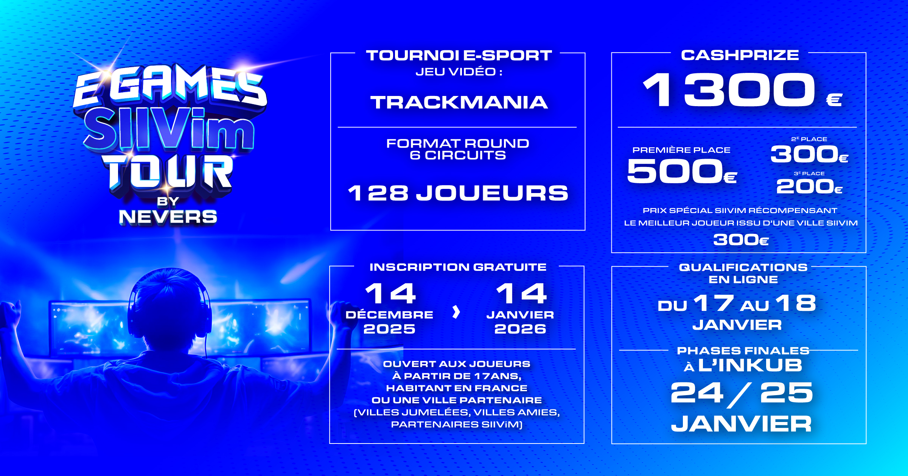
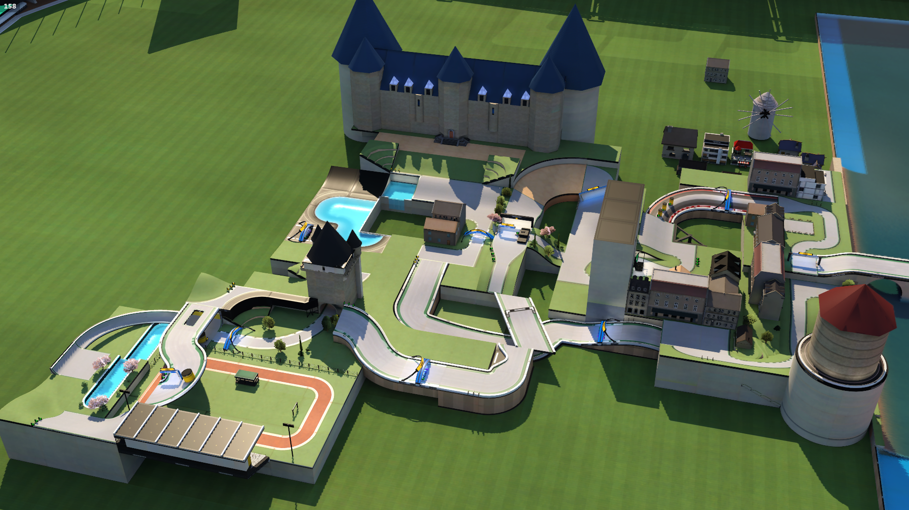
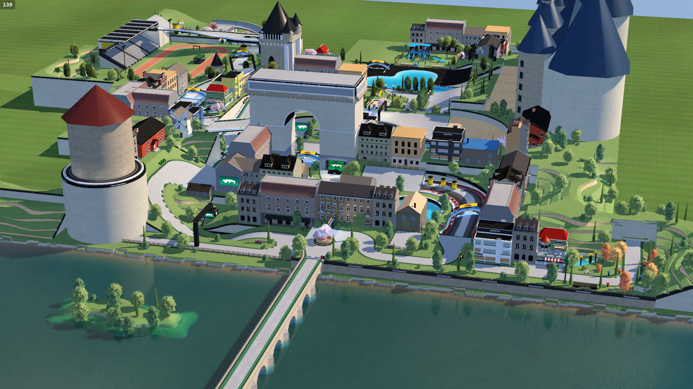
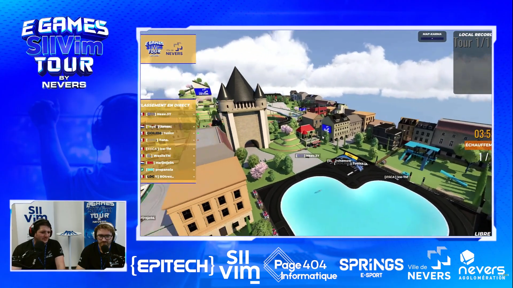

Vue aérienne du circuit

La ville de Nevers organise chaque année une compétition e-sport sur un jeu différent afin de promouvoir son patrimoine en touchant un public jeune.
L'édition de Février 2026 fut portée sur le jeu Trackmania, et afin de proposer une expérience compétitive adaptée aux joueurs, la ville a fait appel à l’association Springs e-Sport pour gérer l'organisation et le contenu de la compétition.
L'association n'ayant pas encore eu d'expérience sur ce jeu, j'ai alors été contacté en Septembre 2025 pour faire partie du projet et de l'assocation, afin d'aider à la conception de l'évènement, et de designer les 6 circuits joués lors de la compétition.

Le circuit ici présenté était le circuit de la finale de la compétition, et devait représenter l’identité de la ville tout en proposant une expérience compétitive à la fois accessible aux joueurs occasionnels et suffisamment exigeante pour rester intéressante auprès des joueurs expérimentés, la compétition ayant pour but de réunir tous les niveaux en étant ouverte à tous.
En tant que circuit principal de l'évènement, la ville de Nevers, organisatrice du tournoi, souhaitait que ce circuit simule un "grand prix urbain" dans la ville, cette dernière devant être reconnaissable à travers plusieurs clins d'oeil à ses monuments et lieux emblématiques.

Avec ces informations en tête, le choix du gameplay "Tech" s'est rapidement imposé, ce style étant par définition majoritairement bitumé, et reposant sur une vitesse modérée ainsi que de nombreux drifts.
Ce choix permet notamment de poser les bases du thème "grand prix urbain" imposé par les élus de la ville, mais également d'appuyer l'aspect "Easy to Learn, Hard to Master" recherché, ce style de circuit étant simple à appréhender pour les joueurs de tous niveaux, mais nécessitant beaucoup de travail d'optimisation.
Pour le flow du circuit, d'expérience, l'alternance de virages droite et gauche plus ou moins serrés et complexes est un pattern plutôt naturel qui fonctionne très bien, en laissant entre chaque drift et chaque difficulté un petit temps de repositionnement afin de corriger les erreurs et/ou se préparer à l'obstacle suivant.

La phase de conception ayant été bien réfléchie en amont, cela m'a permis d'établir une base stable et fonctionnelle rapidement afin d'entamer le travail de la décoration et de l'habillage visuel.
Le layout ayant volontairement été pensé de manière relativement plane et compacte lors de la conception, cela a contribué à faciliter l'intégration des monuments - assemblés en parallèle - puis des bâtiments par la suite, renforçant ainsi l'identité urbaine recherchée pour le circuit.
Aussi, suite à une évolution de l'organisation du projet, ce circuit qui était initialement prévu comme une vitrine de la ville de Nevers, a finalement été retenu comme circuit de finale, pensée comme une épreuve d'endurance en 12 tours.
Le tracé a donc été adapté en format "multilap", en reliant le point d'arrivée au point de départ afin d'enchaîner les tours sans transition. Cette modification est restée légère, les deux points étant par chance déjà proches et naturellement compatibles avec ce raccord.

Après validation de la dernière version par l'équipe de testeurs, j'ai pu me pencher pleinement sur la phase de modélisation du décor de la ville, étant donné qu'il s'agissait d'un point important imposé par les organisateurs.
J'ai donc commencé par dessiner la Loire et son pont, ceux-ci permettant de reconnaître d'un coup d'oeil la ville de Nevers vue du ciel selon moi.
Je n'ai en revanche pas cherché à placer les monuments de la ville à leurs emplacements réels, car cela aurait imposé de modéliser quasi entièrement la ville, et mon layout n'a pas été créé de cette manière. Ainsi, l'objectif n'était donc pas de reproduire fidèlement la géographie de Nevers, mais plutôt d'y faire des "clins d'oeil" via les monuments, ceux-ci ayant pour but de pouvoir identifier la ville du point de vue joueur.
L'ajout de nombreux assets d'appartements et maisons à la bonne échelle ainsi qu'un peu de verdure a ensuite permis de compléter l'ambiance urbaine et accentuer l'effet désiré. Ceux-ci ont été placés les uns à la suite des autres, la ville de référence étant assez dense, mais toujours en faisant attention à ne pas trop bloquer la visibilité des joueurs : un compétiteur doit ainsi à chaque instant savoir à quoi s'attendre et comment s'y préparer.

Lors de la découverte des circuits, que ce soit par les joueurs pendant la compétition ou par les élus de la mairie de Nevers, les retours ont été très positifs quant à la qualité des circuits et des décors.
Le circuit a ainsi rempli son objectif principal : proposer une finale lisible, compétitive et cohérente avec le thème demandé, tout en permettant à la ville de Nevers d’être reconnaissable à travers plusieurs éléments visuels forts.
Le principal point d'amélioration remonté concernait d'avantage le format de la finale que le tracé lui-même : sur une épreuve d'endurance en "seulement" 12 tours, une erreur importante devenait très difficile à rattraper.
C'est un point que je retiens pour l'équilibrage des futurs projets compétitifs, bien que cela fasse partie du jeu.
